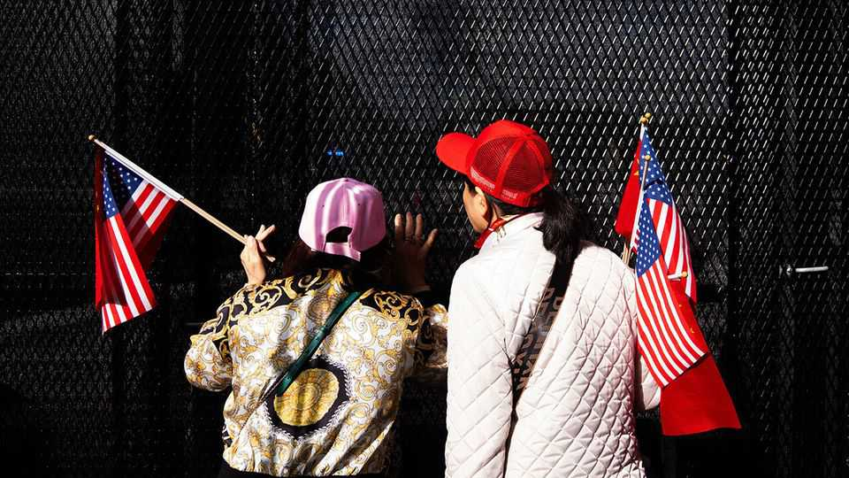
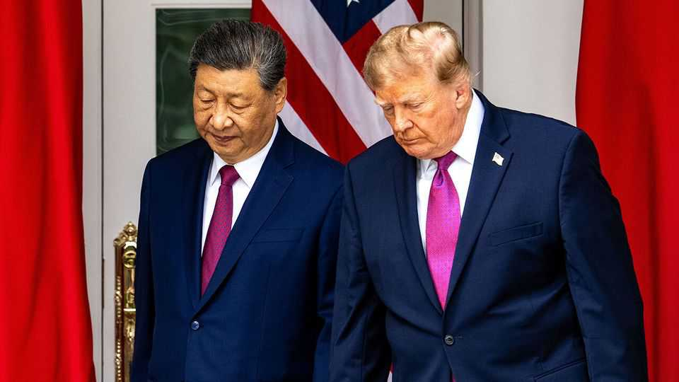

In an AI crisis, would China answer the phone?
The Americans want a hotline but the Chinese have been cool in the past

Oct 1st 2026
On the same day that an American fighter jet shot down a Chinese spy balloon in 2023, Pentagon officials tried to use a military hotline to China. Lloyd Austin, America’s secretary of defence at the time, wanted to talk directly to Wei Fenghe, his Chinese counterpart, to prevent an escalation. There was just one problem: General Wei refused to take the call. America had “not created the proper atmosphere” for dialogue, a Chinese military spokesman said. Nor was that the first time China had shunned the hotline. It had “just rung in an empty room for hours upon hours”, recalled Kurt Campbell in 2021 when he was the most senior Asia official in the White House.
Would a hotline for artificial-intelligence emergencies work any better? The Trump administration seems to think so. One of the few outcomes of the meeting between Xi Jinping and Donald Trump in Washington on September 24th was an agreement to establish a bilateral “communication channel” for AI-related incidents. The two sides also agreed to hold a second round of a newly revived AI dialogue by November, when Mr Xi and Mr Trump plan to meet again in China. Neither has provided details of how an AI communication channel will work. But American officials (who proposed the idea) have likened it to hotlines with the Soviet Union during the cold war.
That sounds sensible to many people, given the growing fears that AI models could destroy humanity. Yet among those who have tried to set up or use a hotline with China, the proposal often prompts eye-rolling. “There have been many such attempts to keep channels of communication open,” says Daniel Kritenbrink, a former deputy head of America’s embassy in Beijing who has also served as a top Asia official in the White House and the State Department. “Those hotlines have been mostly ineffective.” In a crisis, he adds, the Chinese system “usually goes dark”.
The cold war does offer some valuable lessons. A hotline between American and Soviet leaders was first set up after the Cuban missile crisis almost triggered a nuclear war in 1962. The original idea was for them to communicate quickly and directly, rather than by means of diplomatic cables which could take hours to transmit. Although diplomatic communications soon speeded up, the hotline conveyed urgency and built up trust. It did not always ease tensions: both sides used it to make threats, too. But along with other communication mechanisms, it helped to prevent a nuclear Armageddon.

American efforts to replicate that with China have been troubled from the start. A presidential hotline was created in 1998 in response to a crisis two years earlier in which China fired missiles into waters near Taiwan, prompting America to send two aircraft-carriers to the area. Bill Clinton, as president, tried to use the hotline in 1999 after America accidentally bombed the Chinese embassy in Serbia’s capital, Belgrade. But his counterpart, Jiang Zemin, refused to take the call for a week. Two years later, American officials struggled to reach anyone in the Chinese government for 12 hours after an American spy plane collided with a Chinese jet fighter and was forced to land at a military airfield on Hainan, an island in southern China.
One conclusion America reached was that it needed a hotline to Chinese military commanders, too. That was launched in 2008, enabling encrypted voice-calls between the office of America’s defence secretary at the Pentagon and Zhongnanhai, the leadership compound in Beijing, with an extension to China’s defence ministry. Yet calls had to be arranged 48 hours in advance. And it soon became clear that China’s approach to crisis management had not changed. In 2009 Chinese navy and law-enforcement vessels surrounded an American ocean-surveillance ship in the South China Sea. American calls on the hotline went unanswered.
Such incidents reveal a pattern. China appears reluctant to pick up the phone because it wants time to gather information and formulate a response. But it also often sees an advantage in stalling to maximise leverage over the Americans, who typically want to resolve each crisis quickly. Another obstacle is that China sees itself as the weaker party and views American attempts to build guardrails as ploys to constrain its activities. (The Soviets, by contrast, viewed themselves as equals to the Americans in military terms, with a shared interest in avoiding nuclear war.)
Veterans of hotline diplomacy with China are not all sceptics. Some say the presidential hotline has helped with negotiations on more routine matters, such as leaders’ visits, and in co-ordinating responses to problems like the global financial crisis of 2007-09. The military hotline was effective, too, when China worried that America might be planning to attack it around the time of the American presidential election in 2020. And some hotline advocates say China now has enough worries of its own about AI safety to have a real interest in exchanging information with America, focused to begin with on issues of common concern such as rogue AI models and malicious humans without government links.
Still, to make an AI hotline effective in a crisis, it would need to differ from existing ones in several ways. For a start, it should be text-based, rather than a voice link. “The phone doesn’t work at the front end of a crisis,” says Drew Thompson, a Singapore-based scholar who, as a Pentagon official, helped to negotiate an upgrade of the military hotline. It works “at the back end after the Chinese side has had a chance to do a committee meeting”. He favours the fax. That gives each side time to review the contents and prepare a response. It also eliminates the trouble of scheduling live conversations and reduces the risk of mistranslations or misunderstandings based on tonal delivery.
Written communications allow for sudden personnel changes, too. That is especially pertinent now, given Mr Xi’s recent purge of his military high command, says one adviser to the Chinese government. Another improvement would be an agreement on thresholds that trigger hotline use, according to Lucy Luo, an AI-policy researcher at the Carnegie Endowment for International Peace. She also suggests establishing a separate communication channel, staffed by people with AI expertise, for routine exchanges of information about minor incidents and best practices.
In recent meetings, one potential model discussed among Chinese and Western AI experts is another regular military communication mechanism, established in 1998. Under the Military Maritime Consultative Agreement, American and Chinese officers have met twice yearly (except when China suspended all military communications) to discuss air- and maritime-safety incidents, some of which are then taken up on the military hotline.
Whether China and America are at the point of discussing such details is unclear. They have yet to clarify who exactly should take part in their revived AI dialogue, which is being led for now by America’s treasury secretary, Scott Bessent, and one of China’s deputy prime ministers, He Lifeng. And they will be preoccupied with negotiating other matters, including a longer extension of a trade-war truce, before their leaders meet again in November. Announcing the AI hotline was still, on balance, a positive step. Now they need to make it work.■
Subscribers can sign up to Drum Tower, our new weekly newsletter, to understand what the world makes of China—and what China makes of the world.